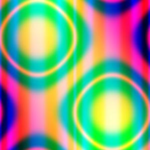
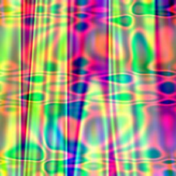
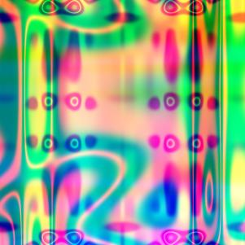
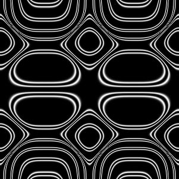
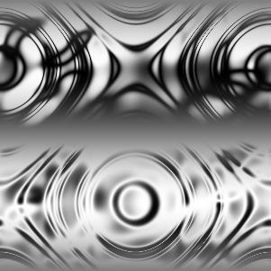

(click your browser's refresh button to ensure that you have the most recent version)
Code for all programming assignments should be well documented. A working program with no comments will receive only partial credit. Documentation entails writing a description of each function/method, class/structure, as well as comments throughout the code to explain the program logic. Comments in OCaml are enclosed within (* *), and may be nested. It is understood that some of the exercises in this programming assignment require extremely little code and will not require extensive comments.
While few programming assignments pretend to mimic the "real" world, they may, nevertheless, contain some of the ambiguity that exists outside the classroom. If, for example, an assignment is amenable to differing interpretations, such that more than one algorithm may implement a correct solution to the assignment, it is incumbent upon the programmer to document not only the functionality of the algorithm (and more broadly his/her interpretation of the program requirements), but to articulate clearly the reasoning behind a particular choice of solution.
The overall objective of this assignment is for you to have fun learning
about recursion, recursive datatypes, and make some pretty cool pictures.
All the problems require relatively little
code ranging from 2 to 10 lines.
If any function requires more than that,
you can be sure that you need to rethink your solution.
The assignment is spread over four files
misc.ml,
expr.ml,
art.ml,
test.ml, that you need to download.
The first three files contain several skeleton OCaml functions, with missing
bodies, i.e. expressions, which currently contain the text
failwith "to be written" .
Your task is to replace the text in those files with the
the appropriate OCaml code for each of those expressions.
Note: All the solutions can be done using the purely functional fragment of ML, using constructs covered in class, and most require the use of recursion. Solutions using imperative features such as references, while loops or library functions other than the automatically opened Pervasives library, will receive no credit.
It is a good idea to start this assignment early; OCaml programming, while quite simple (when you know how), often seems somewhat foreign at first, particularly when it comes to recursion and list manipulation.Your functions/programs must compile and/or run on a Linux ACS machine (e.g. ieng6.ucsd.edu , as this is where the verification of your solutions will occur. While you may develop your code on any system, ensure that your code runs as expected on an ACS machine prior to submission. You should test your code in the directories from which the zip files (see below) will be created, as this will approximate the environment used for grading the assignment.
Most of the points, except those for comments and style, will be awarded
automatically, by evaluating your functions against a given test suite.
The fourth file, test.ml contains a very small suite of tests which
gives you a flavor of of these tests. At any stage, by typing at the UNIX
shell :
ocaml test.ml | grep "130>>" > log
you will get a report on how your code stacks up against the simple
tests.
The last line of the file log must contain the word "Compiled" otherwise you get a zero for the whole assignment. If for some problem, you cannot get the code to compile, leave it as is with the failwith ..., with your partial solution enclosed below as a comment. There will be no exceptions to this rule. The second last line of the log file will contain your overall score, and the other lines will give you a readout for each test. You are encouraged to try to understand the tests in test.ml, and subsequently devise your own tests and add them to test.ml, but you will not be graded on this.
Alternately, inside the OCaml shell, type (user input is in red):
# #use "test.ml";;
.
.
.
- : int * int = (...,...)
and it should return a pair of integers, reflecting your score and
the max possible score on the sample tests. If instead an error
message appears, your code will receive a zero.
Your solutions to this assignment will be stored in separate files under a directory called solution/, inside which you will place the files: misc.ml, expr.ml, art.ml, sample.jpg, gray1.jpg, gray2.jpg, gray3.jpg, color1.jpg, color2.jpg, color3.jpg. The first three files listed above are the versions of the corresponding supplied file that you will have modified. The last seven .jpg files are described below. There should be no other files in the directory.
After creating and populating the directory as described above, create a zip file called <LastName>_<FirstName>_cse130_pa2.zip by going into the directory solution and executing the UNIX shell command:
zip <LastName>_<FirstName>_cse130_pa2.zip *You can refer to an example submission file to compare with yours. Make sure that your zipped file's structure is the same as the example.
Once you've created the zip file with your solutions, you will use the validate_pa2 program to see whether your zip file's structure is well-formed to be inspected by our grading system by executing the UNIX shell command:
validate_pa2 <LastName>_<FirstName>_cse130_pa2.zipThe validate_pa2 program will output OK if your zip file is well-formed and your solution is compiled. Otherwise, it will output some error messages. Before going to step 3, make sure that your zip file passes validate_pa2 program. Otherwise you get a zero for the whole assignment. If you have any trouble with this, refer to the instructions in step 1.
Once your zip file passes the validation check by validate_pa2, you will use the turnin_pa2 program to submit this file for grading by going into the directory solution/ and executing the UNIX shell command:
turnin_pa2 <LastName>_<FirstName>_cse130_pa2.zipThe turnin_pa2 program will provide you with a confirmation of the submission process; make sure that the size of the file indicated by turnin_pa2 matches the size of your zip file (turnin_pa2 is a thin wrapper script around the ACMS command turnin that repeats validation and ensures that the propper assignment name is passed). Note that you may submit multiple times, but your latest submission overwrites previous submissions, and will be the ONLY one we grade. If you submit before the assignment deadline, and again afterwards, we will count it as if you only submitted after the deadline.
Without using any built-in OCaml functions, write an OCaml function assoc : int * string * (string * int) list -> int (or more generally, 'a * 'b * ('b * 'a) list -> 'a) that takes a triple (d,k,l) where l is a list of key-value pairs [(k1,v1);(k2,v2);...] and finds the first ki that equals k. If such a ki is found, then vi is returned. Otherwise, the default value d is returned.
Your function should be tail recursive. Once you have implemented the function, you should get the following behavior at the OCaml prompt:
# assoc (-1,"jeff",[("sorin",85);("jeff",23);("moose",44)]);;
- : int = 23
# assoc (-1,"bob",[("sorin",85);("jeff",23);("moose",44);("margaret",99)]);;
- : int = -1
Without using any built-in OCaml functions, modify the skeleton for removeDuplicates to obtain a function of type int list -> int list (or more generally, 'a list -> 'a list) that takes a list l and returns the list of elements of l with the duplicates, i.e. second, third, etc. occurrences, removed, and where the remaining elements appear in the same order as in l .
For this function only, you may use the library functions List.rev and List.mem. Once you have implemented the function, you should get the following behavior at the OCaml prompt:
# removeDuplicates [1;6;2;4;12;2;13;6;9];;
- : int list = [1;6;2;4;12;13;9]
Without using any built-in OCaml functions, or the while or for
construct, write an OCaml function:
wwhile : (int -> int * bool) * int -> int (or more generally, ('a -> 'a * bool) * 'a -> 'a ) that takes as
input a pair (f,b) and calls the function f on input b to get a pair (b',c').
wwhile should continue calling f on b' to update the pair as long as c' is true. Once f returns a c' that is false, wwhile should return b'.
Your function should be tail recursive. Once you have implemented the function, you should get the following behavior at the OCaml prompt:
# let f x = let xx = x*x*x in (xx,xx<100);;
val f : int -> int * bool = fn
# wwhile (f,2);;
- : int = 512
Without using any built-in OCaml functions, modify the skeleton for fixpoint to obtain a function of type (int -> int) * int -> int (or more generally, ('a -> 'a) * 'a -> 'a) which repeatedly updates b with f(b) until b=f(b) and then returns b.
Once you have implemented the function, you should get the following behavior at the OCaml prompt:
# let g x = truncate (1e6 *. cos (1e-6 *. float x));;
val f : int -> int = fn
# fixpoint (g,0);;
- : int = 739085
|  |  |  |
|  |  |
e ::= x | y | sin (pi*e) | cos (pi*e) | ((e + e)/2) | e * e | (e<e ? e : e)where pi stands for the constant 3.142, are functions over the variables x,y, which are guaranteed to produce a value in the range [-1,1] when x and y are in that range. We can represent expressions of this grammar in ML using values of the following datatype:
type expr =
VarX
| VarY
| Sine of expr
| Cosine of expr
| Average of expr * expr
| Times of expr * expr
| Thresh of expr * expr * expr * expr
First, write a function exprToString : expr -> string
to enable the printing of expressions.
Once you have implemented the function, you should get the
following behavior at the OCaml prompt:
Next, write the function eval : expr * float * float -> float that takes an triple (e,x,y) and evaluates the expression e at the point x,y . You should use Ocaml Math library, in particular, sin, cos to build your evaluator. Recall that Sine(VarX) corresponds to the expression sin(pi*x). Once you have implemented the function, you should get the following behavior at the OCaml prompt:# exprToString (Thresh(VarX,VarY,VarX,(Times(Sine(VarX),Cosine(Average(VarX,VarY))))));;
- : string = "(x<y?x:sin(pi*x)*cos(pi*((x+y)/2)))"
At the OCaml prompt, enter:# eval (Sine(Average(VarX,VarY)),0.5,-0.5);;
- :float = 0.0
# eval (Sine(Average(VarX,VarY)),0.3,0.3);;
- = 0.809016994375 : float
# eval (sampleExpr,0.5,0.2);;
- : float = 0.118612572815
# #use "art.ml";;to generate the grayscale image sample.jpg in your working directory. To receive full credit, this image must look like the leftmost grayscale image displayed above. Note that this requires your implementations of eval to work correctly. A message Uncaught exception ... is an indication that your eval is returning a value outside the range [-1.0,1.0].
emitGrayscale (eval_fn sampleExpr, 150, "sample") ;;
The first element rand is a random number generator of type int * int -> int . Each call rand (i,j) returns a random integer between i inclusive and j exclusive. Use this function to randomly select operators when composing subexpressions to build up larger expressions.
The second element depth is a maximum nesting depth. A random expression of depth d built by randomly composing sub-expressions of maximum depth d-1 , and the only expressions of depth 0 are VarX or VarY .
With this in place you can generate random art using the functions
doRandomGray : int * int * int -> unitEach function takes as a parameter a triple (depth,seed1,seed2) where depth is the depth of the expression to be generated and seed1,seed2 are two seeds for the random number generator. The functions generate JPEG files called
doRandomColor : int * int * int -> unit
art_g_1_<depth>_<seed1>_<seed2>.jpg,The first is a gray scale image, built by mapping out a single randomly generated expression over the plane, and the second is a color image built using three functions for the intensities of red, green and blue.
art_c_1_<depth>_<seed1>_<seed2>.jpg .
Play around with how you generate the expressions, using the tips below. Name your best three color files color1.jpg, color2.jpg, color3.jpg, and save their parameters, i.e. the depth and the seeds in the bodies of c1,c2,c3. Name your best three gray files gray1.jpg, gray2.jpg, gray3.jpg , and save their parameters in the bodies of g1,g2,g3.
Note:C of expr * expr * expr
You can include images generated with these new operators when choosing your best images for part (b).